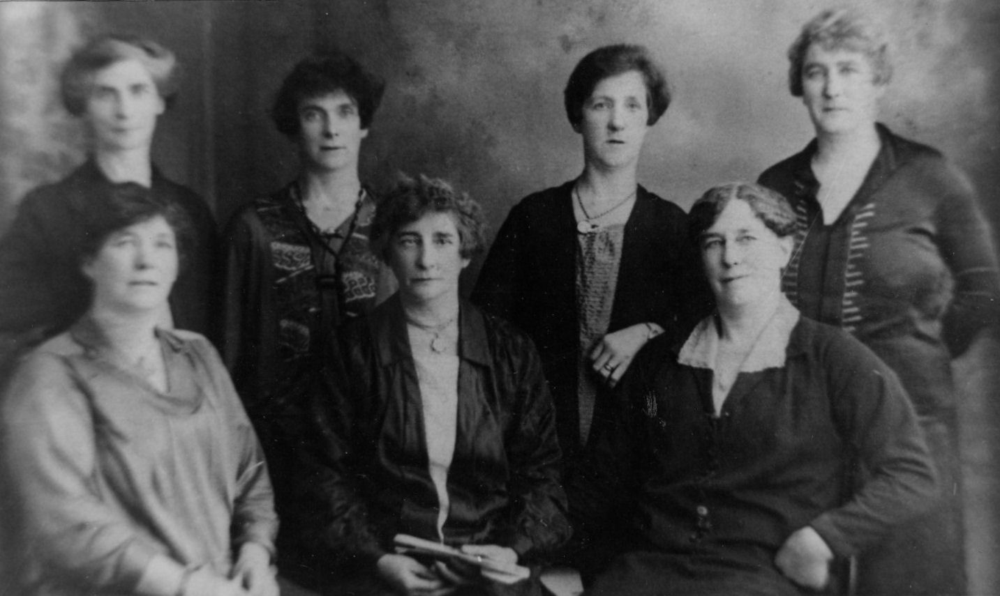

Historical record
Phoebe Clara Freebody
(1868-1946)
Death evidence recorded
Events and attributes
| Sex | Female | |
|---|---|---|
| Birth | 28 OCT 1868 | Chobham Surrey |
| Death | 26 MAR 1946 | 60 Frenchgate, Richmond, North Riding of Yorkshire |
| Occupation | Housekeeper |
Parents and siblings
Parental family
Parents shown publicly
Marriage: 2 MAY 1865 · Ashton Under Lyne, Lancaster and Chester
Other children shown publicly
Partners and children
Partner family
Partners shown publicly
No other publicly eligible partner record.
Children shown publicly
Partner family
Partners shown publicly
Marriage: 25 DEC 1895 · Parish Church of Portsea Portsmouth
Children shown publicly
Associated photographs
These preserved photographs were linked to this person on the original family website.
